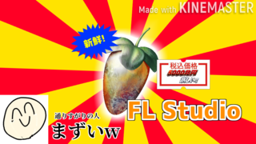

TokyoUndergroundコンピレーション２ IllustYeah☆
☆このページはTokyoUndergroundのMusicVket特設サイトです！！！☆
▲これはジャケットです／作：黒井くろ
↑ この絵 をかっこよくしてみたよ！すごいよね。
このコンピってな～に？
このコンピは、いらすとやの絵を調べて好きなのを一つ選び、
なんかとても適当そう！なのでサイトもダサく作ってみたよ |
おかね
1000円（日本円）
お品書き
- Antem vs 712 - 暗闇フィットネス
- Pinoyaki - リトマス試験紙の変化
- Todayday - 超能力
- 02. - モノリス
- ToYou - オウムアムア
- 橋本琉芽 - 水の中で眠る会社員たち
- ちりり - トルネードポテト
暗闇フィットネスってなに？？？
なんか楽しそう！
Antemさん (@evitosovite) / Twitter
そうだよね！リトマス試験紙って変わるよね！
理科でやったけど、使い方もう忘れちゃった！
Pinoyakiさん (@Pinoyaki) / Twitter
人間生活に超能力は大事
超能力のイラスト | かわいいフリー素材集 いらすとや今日日さん (@Ky0bi_) / Twitter
モノリスというより.....何？←謎なのでやっぱりモノリスかも！
モノリスのイラスト | かわいいフリー素材集 いらすとや02.さん (@Bycuope) / Twitter
オウムアムアってオウムの仲間かと思ったら恒星間天体のことらしい！
オウムじゃないんだね！
長崎エミ / ToYou トーヨーさん (@39kir) / Twitter
疲れたので、おれも水の中で眠る会社員たちになろうかな
水の中で眠る会社員たちのイラスト | かわいいフリー素材集 いらすとや橋本琉芽（ハシモトルガ）さん (@ruga_H) / Twitter
たまにKFCでトルネードポテト売ってますが、あれ美味しいよね。
トルネードポテトのイラスト | かわいいフリー素材集 いらすとや散りり🌺さん (@Chilu_Lili) / Twitter
くろすふぇ～ど
|
スポンサードリンク  Ads by Mintoll |
ここで買えます
VirtualMarketβ
MusicVketの運営元のHIKKY株式会社が運営しているBoothみたいなやつ
一番最初にここで配信されるよ
Booth
みんな大好きBooth
Comming Soon....BandCamp
音楽好きならみんな使ってる！BandCampのコーナー
Comming Soon...二次創作について
無断転載以外での非営利利用が可能です。
楽曲を利用する際は、【楽曲名・アーティスト名・アーティストのTwitterURL】をすべて明記してください。
営利目的での利用の場合はcontact@tokyounderground.netまでお問い合わせください。
スタッフ～
巳波みなと
主催、TokyoUndergroundの主
ウェブコーディングを担当
ハクアを博愛する人
なぞの映像クリエイター。今回は運営もやってくれました
ハクアを博愛する人さん (@hakua_loveEQ) / Twitter高梨辣油
あやしい文字書き、企画屋。このコンピを考案した影の黒幕。こわすぎ
高梨辣油さん (@RaU_Takanashi) / Twitterこのサイトの共犯
いここさん - 最初のタイトル文字（WordArt）の作成Mintoll - クソ広告画像提供
(c) TokyoUnderground 2021